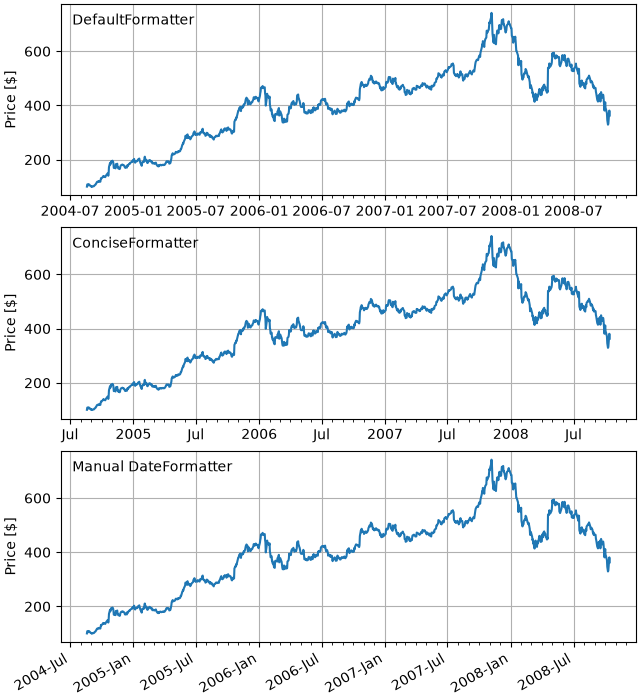

Note
Go to the end to download the full example code.
Date tick labels#
Matplotlib date plotting is done by converting date instances into
days since an epoch (by default 1970-01-01T00:00:00). The
matplotlib.dates module provides the converter functions date2num
and num2date that convert datetime.datetime and numpy.datetime64
objects to and from Matplotlib's internal representation. These data
types are registered with the unit conversion mechanism described in
matplotlib.units, so the conversion happens automatically for the user.
The registration process also sets the default tick locator and
formatter for the axis to be AutoDateLocator and
AutoDateFormatter.
An alternative formatter is the ConciseDateFormatter,
used in the second Axes below (see
Format date ticks using ConciseDateFormatter), which often removes the need to
rotate the tick labels. The last Axes formats the dates manually, using
DateFormatter to format the dates using the format strings documented
at datetime.date.strftime.

import matplotlib.pyplot as plt
import matplotlib.cbook as cbook
import matplotlib.dates as mdates
# Load a numpy record array from yahoo csv data with fields date, open, high,
# low, close, volume, adj_close from the mpl-data/sample_data directory. The
# record array stores the date as an np.datetime64 with a day unit ('D') in
# the date column.
data = cbook.get_sample_data('goog.npz')['price_data']
fig, axs = plt.subplots(3, 1, figsize=(6.4, 7), layout='constrained')
# common to all three:
for ax in axs:
ax.plot('date', 'adj_close', data=data)
# Major ticks every half year, minor ticks every month,
ax.xaxis.set_major_locator(mdates.MonthLocator(bymonth=(1, 7)))
ax.xaxis.set_minor_locator(mdates.MonthLocator())
ax.grid(True)
ax.set_ylabel(r'Price [\$]')
# different formats:
ax = axs[0]
ax.set_title('DefaultFormatter', loc='left', y=0.85, x=0.02, fontsize='medium')
ax = axs[1]
ax.set_title('ConciseFormatter', loc='left', y=0.85, x=0.02, fontsize='medium')
ax.xaxis.set_major_formatter(
mdates.ConciseDateFormatter(ax.xaxis.get_major_locator()))
ax = axs[2]
ax.set_title('Manual DateFormatter', loc='left', y=0.85, x=0.02,
fontsize='medium')
# Text in the x-axis will be displayed in 'YYYY-mm' format.
ax.xaxis.set_major_formatter(mdates.DateFormatter('%Y-%b'))
# Rotates and right-aligns the x labels so they don't crowd each other.
ax.xaxis.set_tick_params(rotation=30, rotation_mode='xtick')
plt.show()
Total running time of the script: (0 minutes 1.186 seconds)